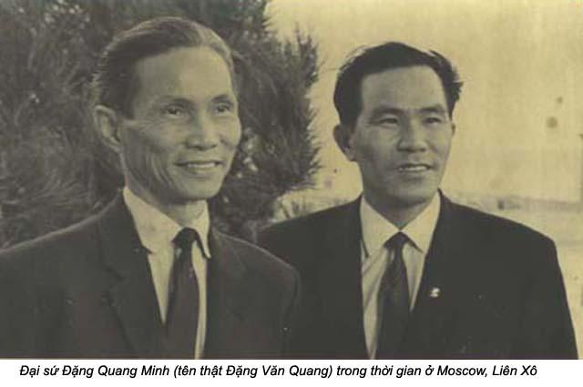

Chương 28

gày 15 tháng Tư năm 1975, John lên đường về Sài gòn tìm cách rước má và hai em tôi qua Mỹ. Sau này anh kể lại với tôi rằng dù anh lúc nào cũng lạc quan, đó là bản tánh của anh, thế mà khi máy bay cất cánh khỏi phi đạo Hickam, anh cũng nôn nao, hồi hộp, vì không đoán trước được chuyện gì xảy ra bên kia bờ đại dương, trên quê hương của vợ. Quân cộng sản sắp tràn vô Sài gòn; biết anh có đủ thời gian và phương tiện đưa mẹ và hai cô em vợ ra khỏi vòng nguy hiểm không? Kinh nghiệm của một sĩ quan hải quân phi công có giúp anh được gì không? Dù sao, lái một chiếc máy bay mới sáng chế cũng đỡ nguy hiểm hơn xông vào lò lửa đầy bất trắc. Anh chỉ biết tin vào tài tháo vát của mình mà thôi.
Lộ trình của chuyến bay này sẽ ghé qua mấy nơi như căn cứ không quân Clark của Mỹ ở Phi Luật Tân, Sài gòn và trạm cuối cùng là Bangkok.
Nhưng khi đến Guam, đáng lẽ chỉ nghỉ có một tiếng, lại kéo dài gấp ba, khiến John càng bồn chồn, nóng ruột, nhưng chả biết làm thế nào hơn.
Khi mọi người trở lại máy bay và đã an vị, John thấy trong đám hành khách mới lên ở Guam có một ông tướng hải quân. Qua đồng phục, hai người nhận ra nhau ngay, họ cùng là phi công. John gật đần chào ông tưởng, nhưng anh không biết có nên nói chuyện với ông không, khi anh ghé Sài gòn một cách bất hợp pháp. Nhưng chính ông tướng lại tới bắt tay John, và tự giới thiệu ông là trung tướng Oberg, một sĩ quan tham mưu của Lực lượng Thái Bình Dương. Thì ra hai người cùng đi Sài gòn. Tướng Oberg hỏi anh sĩ quan trẻ có nhiệm vụ gì ở Sài gòn. John nói thật là đi rước gia đình vợ ra khỏi Việt Nam
Suy nghĩ hỏi lâu, ông tướng luu ý John là chỉ có những người có công vụ mới được qua Việt Nam. John cúi nhìn xuống đất, chỉ khẽ gật đầu mà không nói một lời. Từ đó hai người giữ im lặng.
Khi máy bay đáp xuống phi trường Clark ở Phi Luật Tân, ông Oberg nói với John:
- Tôi không nói cho ai biết hết, nhưng anh cần nhiều may mắn hơn đó!
Ông còn cho John biết ở phi trường Clark, quân cảnh sẽ kiểm tra chặt chẽ. Hành khách phải xuống máy bay để hoàn tất thủ tục đến Sài gòn.
Khi máy bay còn nằm trên trên phi đạo ở Clark, John bắt đầu xem các loại giấy tờ. Anh không có sự vụ lịnh, giấy chiếu khán nhập cảnh Việt Nam. Anh nghĩ sẵn những lý do thật sự và khả sĩ để thuyết phục quân cảnh. Nhưng anh biết, chẳng có lý do nào khả dĩ thuyết phục bất cứ ai. Vì thế, anh lo lắm, lo có thể bị quay trở lại Guam. Nhưng có một phép lạ đã cứu anh. Vì chuyến bay đã quá trễ sau khi đã ngừng ở Guam đến ba tiếng đồng hồ, nên tất cả hành khách xuống máy bay phải đứng chở ở một góc được giữ an ninh trật tự, không ai được ra khỏi vùng đó, nên quân cảnh không mất nhiều thì giờ xét giấy tờ lần thứ hai. John thở một hơi dài như muốn trút ra khỏi lồng ngực tất cả sự lo âu. Ông Oberg nheo mắt cười với anh, như muốn tỏ vẻ chúc mừng anh đã gặp may mắn. Máy bay cất cánh sau ba mươi phút xuống đổ xăng. Bay giờ, giữa anh và Việt Nam không còn gì xa cách nữa. Chỉ có vài trăm dặm của biển Thái Bình phía trước.
Khi chỉ còn vài phút nữa là tới phi trường Tân Sơn Nhứt, anh vô phòng vệ sinh chất cứng thay quần áo. Anh xếp bộ đồng phục xuống tận đáy va ly. Anh mặc một bộ quần áo kaki, hoá trang thành một nhà báo dân sự, giống các nhà báo ở Sài gòn. Sau khi máy bay đáp xuống, hành khách sửa soạn đi ra, anh chưa nghi ra cái mẹo nào có thể qua mặt đám quân cảnh xét giấy tờ ở phía dưới. Khi bước ra khỏi máy bay, còn ở gần cầu thang, anh chợt trông thấy tướng Oberg bước vào một chiếc xe mầu đen có bảng hiệu VIP, tài xế là một quân nhân. Khi chiếc xe lướt đi trong ánh nắng tháng Tư của Sài gòn, anh chợt nảy ra một ý nghĩ táo bạo. Anh bỗng la lớn:
- E, họ lấy xe của tôi! Bắt họ ngừng lại!
Nhiều người nhìn anh rồi kéo nhau vô phòng trình giấy thông hánh. Một người lính quân cảnh đứng dưới đất ngước nhìn anh với vẻ ngạc nhiên, rồi nhìn hút theo chiếc xe mầu đen đã chạy một khoảng xa. Người lính trẻ với gương mặt thật thà hỏi anh:
- Ông tướng Hải quân lấy xe của ông?
John ra vẻ là một nhân vật quan trọng của toà đại sứ la lối om xòm, rồi anh bắt một người lính quân cảnh phải tìm cho anh một chiếc xe khác. Người lính hoảng sợ, chạy vô gọi DOD tìm xe cho “ông lớn”. Khi người lính vừa đi, John vội lẻn qua giữa các building, đi bộ ra khỏi cổng phi trường và mất dạng trong đám đông của Sài gòn. Khi biết chắc chẳng còn ai bắt được mình nữa, anh đi taxi về khách sạn Brink ở đường Hai Bà Trưng. Xuống xe, anh kêu cyclo về nhà má tôi ở đường Nguyễn Văn Sâm. Cả nhà vừa mừng vừa sợ khi thấy John xuất hiện, dù tôi đã gọi điện thoại về báo trước, những không biết chắc ngày nào anh về tới. Má và em tôi có cả ngàn thắc mắc để hỏi John về chị em, con cháu chúng tôi đang ở Mỹ. Người Sài gòn lại hỏi người bên Mỹ về tình hình Sài gòn. John chợt hiểu vì thấy gia đình bên Sài gòn không có đàn ông trong nhà. má ở nhà nghe lỏm tin tức với bạn bè hàng xóm. Một ông thượng sĩ Không quân là lính kiếng ở kề bên. Ông làm sao biết tình hình đất nước lúc bấy giờ, trong khi cả tuần ông chỉ ở trường đua Phú Thọ, và lê la trong các phòng trà về ban đêm. Em tôi còn được sống ở Sài gòn, được người lính Việt Nam Cộng hoà bảo vệ, chưa nếm mùi giặc giã bao giờ. Tôi có hai em, một đứa đã đi làm, còn một đứa đang đi học.
John cho má và em tôi biết anh về để rước ba người đi Mỹ. Nghe nói vậy, mọi người giữ im lặng. Ai cũng muốn bám lấy Việt Nam theo những lý do riêng của họ, cùng mối tâm sự hoang mang mang. Má tôi thì nghĩ tới chuyện được gặp ba tôi và anh Khôi. Tôi nghĩ rằng có thể má cũng nghĩ đến một ngày được an hưởng tuổi già bên cạnh chồng con. Hoà Bình thì nhứt định đi Mỹ, Minh Tâm cũng vậy. Con Vân, người giúp việc của má, muốn đi Mỹ. Má tôi vội viết thơ để lại cho anh Khôi. Trong khi đó, con Vân cũng đổi ý, muốn về Cần Thơ sống với má nó. Má tôi cho nó một số tiền đủ xài hai tháng và một số đồ đạc trong nhà, kể cả bàn máy may. Mà cũng không quên ghi rõ trong thơ là cho anh Khôi nhà của má. Sở dĩ má cho Vân tiền đủ xài trong hai tháng, vì má cho rằng vào khoảng thời gian đó, ba tôi cũng đã vào Sài gòn. Ngoài số tiền mặt, mà cũng cho nó hầu hết đồ đạc trong nhà, chỉ dành lại cho anh Khôi có bộ chén kiểu Noritaki.
Tối hôm đó John gọi tôi, cho hay anh đã tới nơi và đang xúc tiến những chuyện cần thiết. Đoạn đường trước mặt còn gian nan hàng trăm ngàn lần đoạn đường từ Mỹ qua Việt Nam. Trong khi ở Mỹ tôi i lo sợ từng giờ từng phút. Có lúc tôi lại hối hận đã để John dấn thân vào cho nguy hiểm, mà nơi đó người ta đang tìm đường trốn đi.
Kể từ ngày John đi Sài gòn, tôi chầu chực bên cạnh điện thoại suốt ngày, trừ những giờ phải đưa Lance đi học và đón nó. Mỗi lần điện thoại reo tôi lại giựt bắn người lên. Chị Cương ở cách tôi chừng năn, bẩy dặm, thấy tôi quá lo lắng, ban ngày tới nhà tôi chơi. Ban đêm, chị muốn tôi về nhà chị ngủ, nhưng tôi từ chối, ở nhà trông ngóng tin Sài gòn.
Chị Cương và tôi đã tới sở ngoại kiều làm giấy bảo trợ má và hai em Hoà Bình và Minh Tâm. Tôi báo cho John biết số hồ sơ giấy tờ quan trọng cần cho việc đưa má và hai em ra khỏi Việt Nam.
Có một lúc John ngừng gọi cho tôi mấy ngày liền khiến tôi nóng ruột muốn phát điên lên. Tôi phải gọi ông Esper ở văn phòng Thông tấn xã The Associated Press. Nhưng tôi lại gặp xui, vì tổng đài của hãng thông tấn quá bận, nên tôi không liên lạc được với ông. Tôi phải chờ mất hơn ba tiếng đồng hồ mới nói chuyện được với ông. Như muốn trấn an tôi, ông cho biết sẽ gặp John, nhưng không có tin tức gì mới lạ. Ông cũng nói thêm rằng John sẽ làm đủ mọi cách để có thể đưa gia đình tôi sang Mỹ, ông khuyên tôi cứ an tâm chờ đợi.
Vì lo lắng cho má, cho Sài gòn, tôi mất ngủ, mất ăn. Một buổi sáng, tôi nhìn tôi trên kiếng, bỗng thấy tôi già hẳn đi, dù lúc đó tôi mới 29 tuổi đầu. Sài gòn có thể mất trong nay mai. Người miền Nam sẽ đạp lên nhau mà chạy đi tìm tự do. Rồi đây, những di cư từ miền Bắc năm 1954 sẽ lại phải dắt díu vợ con chạy trốn cộng sản một lần nữa. Người miền Nam sẽ phải chịu cảnh chia ly như người miền Bắc 20 năm trước. Trăm ngàn nỗi khổ, người dân của các nước tự do làm sao hiểu nổi. Nghĩ đến những nỗi buồn thảm trong tương lai, tôi thấy xót xa trong lòng nên không dám nghĩ tiếp nữa.
Tôi ngước nhìn lên cao, hỏi ông trời: “Không lẽ dân tôi cứ đau khổ triền miên mái như vậy sao?
Tôi theo dõi tình hình miền Nam trên truyền hình từ sáng đến khuya. Lance đi học về đòi coi truyền hình, tôi phải tìm nhiều đồ chơi khác cho con chơi, nhưng cũng phải nhường TV cho nó khi có phim hoạt hoạ của Nhựt. Đó là hai phim Kikaida và Rainbor Man. Có lần Lance hỏi:
- Sao nhà mình không mua ba cái TV cho ba người, như nhà thằng Mark, thằng Zachery?
Tôi phải trả lời khéo:
- Tại má muốn coi TV chung với Lance.
- Má thằng Mark coi movie hay lắm, con mà coi tin tức chắc muốn chết!
Tôi lại phải giải thích:
- Tại bà ngoại của thằng Mark ở Ohio, bình yên, không chiến tranh, chỉ cần tin thời tiết là đủ. Còn bà ngoại của Lance ở Việt Nam, giặc đánh tới nơi, má muốn biết tin tức bên Sài gòn.
- Giặc là ai? - Lance hỏi.
- Là VC.
- Oh!
Lance đành xin qua nhà thằng Mark, thằng Zachary chơi. Đúng nửa tiếng đồng hồ sau, theo đúng như lời hứa thì Lance trở về về, vì gần tới giờ Lance được coi phim hoạt hoạ.
Trong khi ngồi chờ TV, thình lình Lance hỏi:
- Sài gòn không yên sao mà biểu Daddy đi tới đó?
Thông thường, câu hỏi vô tư của đứa bé năm tuổi không khó trả lời, nhưng câu hỏi này của con tôi làm tôi cứng họng. Tôi cảm thấy mình tội lỗi với John, với má của anh. Tôi đay mặt đi chỗ khác để lau nước mắt. Thật tình, tôi nghĩ tới hiểm nguy cho má nhưng không nghĩ tới hiểm nguy cho tánh mạng của John. Chúng tôi chỉ nghĩ làm sao đưa má và hai em ra khỏi Việt Nam trước khi miền Nam mất vào tay cộng sản. Không biết tôi vô tình hay điếc không sợ súng, hay chúng tôi đang sống ở một nước bình yên, tự do, nên muốn người thân yêu của mình cũng được cuộc sống như mình? Cũng có thể là tất cả những lý do này.
Thấy tôi khóc. Lance lấy miếng Kleenex cho tôi chùi mất, rồi gỏi:
- Má có sợ Việt Cộng bắt bà ngoại không?
Tôi vội la cháu:
- Đừng có nói bậy!
- Chừng nào nào bà ngoại qua. Lance xin ngủ với bà ngoại được không?
- Không, Lance lớn rồi, phải ngủ riêng.
- Sao má nói Lance còn nhỏ, không được ra bờ biển một mình. Bây giờ má lại nói Lance lớn rồi, phải ngủ một mình? Người lớn không công bằng, lúc thì nói con nhỏ, lúc thì nói con lớn.
Nói chuyện với thằng bé ngây thơ, tôi cũng bớt lo lắng phần nào.
Trong khi đó, ở Sài gòn, John đã tìm đủ mọi cách để đưa má và hai đứa em tôi đi chánh thức. Anh tđến Bộ nội vụ xin giấy xuất cảnh, nhưng ông chánh văn phòng bộ này nói không còn ai làm việc nữa, ai cũng bỏ trốn hết rồi. Ông còn đề nghị anh đưa gia đình ông đi cùng với má và hai em; ông sẽ trả tiền cho John. Nhưng anh từ chối.
Một hôm, John gọi về cho hay bữa nay anh số nói chuyện với người “sửa điện thoại” để biết còn cái gì hư hao nữa không; “sửa điện thoại” là mật hiệu riêng giữa chúng tôi. John đi “sửa điện thoại”, có nghĩa là anh sẽ vào toà đại sứ Mỹ để gặp nhân viên CIA cho biết ba tôi là ai. Nếu John bảo tôi đi “sửa điện thoại”, là tôi phải đi gặp đại tướng Gaylor.
John cố tránh tại toà đại sứ Mỹ, vì anh là người đến Sài gòn bất hợp pháp. Chỉ một cú điện thoại, là anh có thể bị lính thuỷ quân lục chiến n ở toà đại sứ bắt, rồi đưa anh lên phi trường, đuổi về Hawaii ngay lập tức. Trước khi quyết định gặp nhân viên CIA, John gọi điện thoại cho đại tá Trần Duy Bính. Bây giờ là tới lúc John trả cái ơn của gia đình tôi cho đại tá Bình. Anh nói với đại tá Bình là anh biết chắc quân bảo vệ sẽ vô Sài gòn, nên đề nghị đại tá Bình chuẩn bị gấp cho ông và gia đình ông đi Mỹ. Anh sẵn sàng giúp đỡ mọi phương tiện. Những đại tá Bính chỉ cảm ơn mà không có ý định bỏ chạy. Ông vẫn còn lạc quan, tin là chưa đến nỗi nào. Sau đó, John nhờ đại tá tìm cho một cây súng. Đại tá Bính đưa liền cho John một cây revolver. Anh tháy súng lớn quá, khó giấu trong người, nên xin một cây nhỏ hơn. Đại tá hứa sẽ tìm cho trong vòng vài ngày. Những tình hình không cho phép “vài ngày”.
John tới cô nhi viện Minh Trí gặp sơ Nguyễn Thị Trọng, sơ cho biết một số trẻ mà John và tôi đã gặp, chết vì bị bịnh hoạn. Một số khác còn sống, nhưng không khóc. Sơ cũng cho biết, nhiều người Mỹ muốn đưa trẻ mồ côi ra khỏi Việt Nam, chẳng hạn như ông Ed Dailey, chủ hãng máy bay World Airways. Ông xin phép toà đại sứ Mỹ cho ông dùng máy bay riêng của ông để đưa trẻ mồ côi đi Mỹ, nhứt là những đứa con lai. Những toà đại sứ không cho phép.
Một hôm, John may mắn gặp bà Shirley Clark, nhân viên của tổ chức từ thiện Friends Service Cơmmittee. Ba khuyên John kiên nhẫn chờ đợi; trong vài ngày sắp tới có thể có tin vui với anh. Đúng như lời bà, hai ngày sau, ông Ed Dailey tổ chức chuyến bay cho trẻ em mồ côi, mà không có phép của toà đại sứ Mỹ. Việc này làm cho nhân viên của toà đại sứ Mỹ tức giận. Họ kêu ông Ed Dailey là người bắt cóc con nít, giống như giọng điệu của cộng sản Bắc Việt.
Nhưng sau đó, nhờ vận động khéo, ông Ed Dailey được đại sứ cho phép đưa con lai ra khỏi Việt Nam. Ông cấp tốc chuyển các trẻ mồ côi lên phi trường, trong đó có cả các em ở cô nhi viện Minh Trí.
Chuyến đầu tiên, gồm có 300 em ở cô nhi viện Minh Trí, tới Úc Đại Lợi. Các nhà báo Uc chê mấy em này dơ dáy, bịnh hoạn, thế mà vẫn có cả ngàn gia đình xin nhận nuôi. Mọi người đều mừng rỡ, vui vẻ.

Nhưng chuyến thứ hai không may mắn. Ở Mỹ, tôi xem TV, được biết chiếc máy bay C-5A chở 243 em và chừng 45 người lớn, cất cánh ở phi trường Tân Sơn Nhứt bị rớt. Tôi lặng người đi, đau đớn đến tê dại, không khóc được.
TV cũng cho biết Đà Nẵng rơi vào tay cộng sản. Hàng vạn người tỵ nạn từ miền Trung đổ tới các tỉnh miền Nam. Già trẻ, em bé hè nhau đi, dẫn theo cả súc vật. Họ gồng gánh một nhúm tài sản nhỏ nhoi. Họ cõng mẹ già, con thơ. Trong thật thê thảm đáng thương. Như vậy, rõ ràng trái với lời tuyên truyền láo của cộng sản là dân miền Nam hân hoan đón chờ cuộc “giải phóng” của họ. Tôi nhớ hồi 1954, có hơn 800.000 người từ miền Bắc di cư vào Nam. Trong khi đó, chỉ có khoảng 180.000 cán bộ miền Nam tập kết ra Bắc.
John có thói quen từ ngày cưới, kêu tôi bằng “Nhà” (phát âm tiếng Việt). Anh cho biết anh thích chữ “Nhà”, vì nó có vẻ ấm cúng và bình an trong tâm hồn.
Một hôm, từ Sài gòn, anh đến văn phòng của hãng thông tấn AP (Associated Press) để gọi điện thoại cho tôi. Với giọng mệt mỏi, anh cho biết không có tin gì hay. Nhưng muốn trấn an tôi, anh nhó:
- Nhà ơi, anh sẽ làm tất cả những gì anh làm được”.
Nhưng anh đâu có biết rằng, nghe được tiếng anh lúc đó, là quá tốt rồi. Tôi an tâm vì biết chắc má tôi và hai đứa em không có mặt trên chiếc máy bay C-5 gẫy cánh mấy ngày trước đó, mà tất cả hành khách đều bị thiệt mạng. Nhưng tôi vẫn chưa hoàn toàn an tâm khi nghĩ đến những cảnh chạy loạn ở Việt Nam mà TV Mỹ chiếu hàng ngày. Dân miền Trung lếch thếch, bồng bế dắt díu nhau chạy trốn làn sóng tấn công của giặc cộng. Từ đó, tôi liên tưởng đến má tôi và hai em. Vì vậy tôi nói với John, giọng năn nỉ:
- Cưng ơi, đừng về Mỹ mà không có má và hai đứa nhỏ nhen.
Nói xong, tôi nhận ra ngay là mình đã lỡ lời một cách ngu ngốc. Rất may là John hiểu rõ tâm trạng tôi lúc bấy giờ.